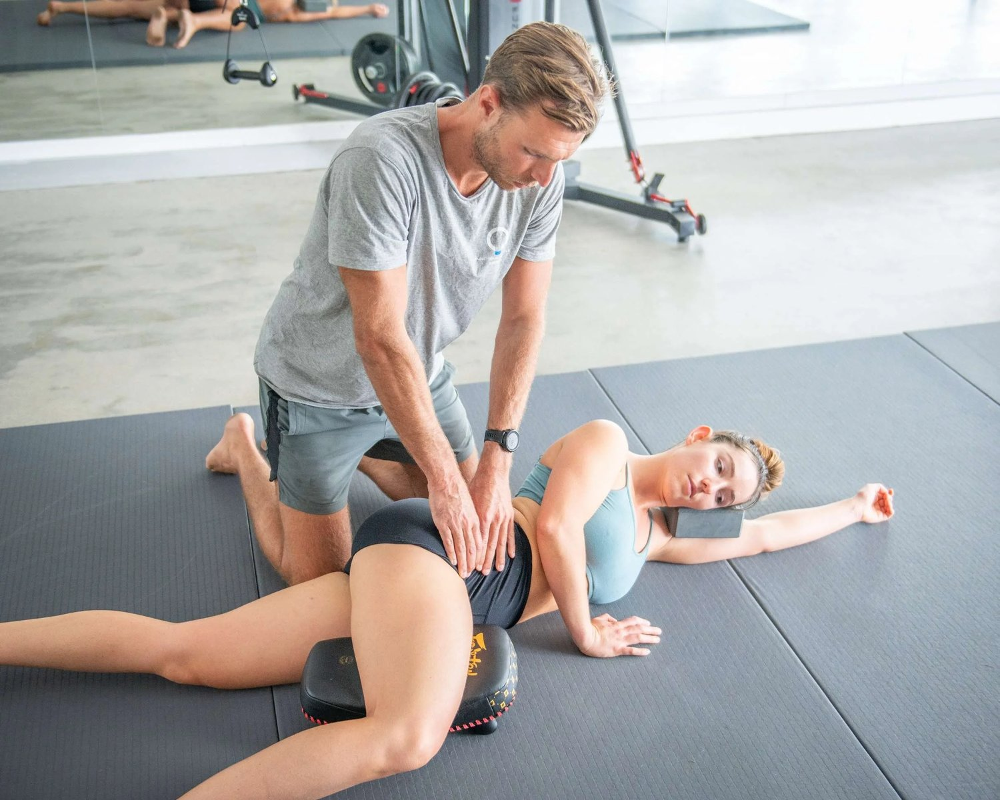
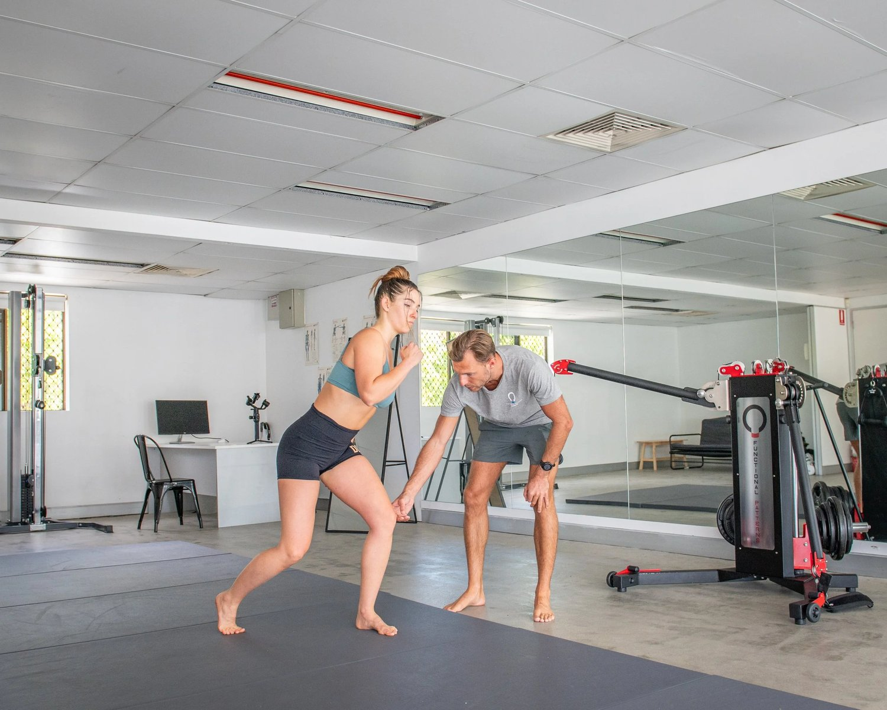

Fibromyalgia is a debilitating condition that few specialists understand. Even Fibromyalgia Specialists can struggle to provide relief.
If you're searching for a "fibromyalgia specialist near me," read this first. Gain a better understanding of what Fibromyalgia truly is and how to substantially reduce pain and tiredness.
Mainstream Treatment Options For Fibromyalgia
Here are the current treatment options available for fibromyalgia (not including our protocol):
Medications
-
Specialists often recommend over-the-counter pain medications such as Tylenol or NSAIDs for Fibromyalgia. Prescription pain relievers such as tramadol may be considered.
-
Antidepressants: Certain antidepressants, such as duloxetine (Cymbalta) and milnacipran (Savella), can help alleviate pain and fatigue associated with fibromyalgia. Low-dose amitriptyline is also sometimes prescribed to improve sleep quality.
Therapies
-
Physical Therapy such as strength training and stretching
-
Seeing an Occupational Therapist
-
Cognitive Behaviour Therapy CBT

Lifestyle and Home Remedies
-
Exercise
-
Stress Management
-
Sleep Hygiene
-
Diet
Alternative Therapies
Some individuals with fibromyalgia explore alternative therapies, though evidence supporting their effectiveness varies:
-
Acupuncture
-
Massage Therapy
-
Mind-Body Therapies

Supplements
Certain supplements, like:
-
magnesium,
-
vitamin D,
-
and omega-3 fatty acids,
are sometimes recommended.
Fibromyalgia Diagnostic Criteria
The diagnostic criteria for fibromyalgia in Australia generally follow the guidelines set by international organisations such as the American College of Rheumatology (ACR). The ACR's 2016 revisions to the 2010/2011 criteria are commonly used to define fibromyalgia syndrome in Australia:

Main Criteria For The Diagnosis of Fibromyalgia
Widespread Pain Index (WPI) and Symptom Severity Scale (SS):
The WPI measures the number of areas in the body where the patient has felt pain in the last week. The score ranges from 0 to 19.
The SS score assesses the severity of symptoms such as:
-
fatigue,
-
waking unrefreshed,
-
cognitive symptoms,
-
& the extent of somatic symptoms in general.
The score ranges from 0 to 12.
Duration of Symptoms:
- Symptoms must be present at a similar level for at least three months.
Exclusion of Other Disorders:
- The patient does not have another disorder that would explain the pain.
Additional Considerations
-
The definition of "generalised pain" includes pain in at least 4 out of 5 regions of the body. Diagnosis takes this into consideration.
-
No Specific Tests: There are no laboratory or imaging tests specifically for diagnosing fibromyalgia. Testing rules out other conditions.
Fibromyalgia Severity
-
WPI and SS scores determine the severity of fibromyalgia.
-
A WPI of 7 or greater and an SS scale score of 5 or greater.
-
Or, a WPI of 4-6 and an SS scale score of 9 or greater.
Key Takeaways From This
As you can see above, there are no blood tests or imagining tests to confirm fibromyalgia.
Having Fibromyalgia basically means experiencing severe and unexplained chronic pain. Fibromyalgia generally comes with a host of other symptoms such as fatigue and brain-fog. This makes the condition difficult to diagnose.
Our View Of Fibromyalgia
Chronic, debilitating pain is undoubtably a thing. We do not believe that the pain is mental/emotional. We believe the pain is a result of poor movement patterns (biomechanics).
We see that clients with fibromyalgia all suffer from dehydrated fascia. When we treat the poor movement patterns and rehydrate fascia, we see major improvements. We also work to reduce systemic inflammation through dietary and lifestyle approaches.
However, we do not believe diet and lieftyle alone can manage fibromyalgia. The tissue needs to begin to function correctly in order to rehydrate and heal.
What is Biomechanics & How is it linked to Fibromyalgia?
When looking for a Fibromyalgia Specialist in Brisbane, Biomechanical knowledge is a must.
Biomechanics is the study of how you move as an organism. It examines how physical forces interact with the body and how the body moves in response to these forces.
It is important to understand how the body's components work together to produce movement and respond to stress, strain, and injury.
Fascia and Biomechanics
Fascia is a dense connective tissue that wraps around every muscle, bone, nerve, blood vessel, and organ in the body. It provides support and protection while enabling movement.
Fascia plays a crucial role in biomechanics by contributing to the body's structural integrity, flexibility, and mobility.
Fascia's health and functionality are essential for efficient movement patterns and biomechanical balance. Understanding fascia is crucial to treat fibromyalgia and manage your pain and other symptoms.

Fascia's Link to Fibromyalgia
The potential connection between fascia and fibromyalgia involves several biomechanical and physiological considerations:
-
Fascia has many nerve endings. These nerve endings are important for feeling pain and knowing where your body is and how it's moving. People with fibromyalgia experience chronic pain and sensitivity. In this condition, dysfunctional or stressed fascia likely contributes to these symptoms.
-
Biomechanical imbalances can happen when you have bad posture, move incorrectly, or have uneven muscles. This can cause more stress and tension in the fascia. Over time, this can contribute to fascial dehydration and adhesions, potentially leading to pain and dysfunction seen in fibromyalgia.
-
Inflammation or Damage to the fascia can make it thicker and develop fibrosis. This can limit movement and add to the widespread pain in fibromyalgia. Additionally, restricted fascial mobility can impair lymphatic drainage and blood flow, potentially leading to further pain and fatigue.
-
Fascia's extensive innervation makes it a key player in the nervous system's response to pain. In fibromyalgia, central sensitisation happens when the nervous system becomes overly reactive, making pain signals stronger. Dysfunctional fascia contributes to this process.
Is there a Cure for Fibromyalgia?
Because Fibomalgia is not a disease you 'catch,' I am reluctant to use the word 'cure.'
However, you can successfully reduce your symptoms and improve your quality of life.
By improving your biomechanics and fascial hydration, you can greatly reduce pain. We also use a protocol that supports tissue health and reduces fascial inflammation through lifestyle and diet.
We have helped many clients with fibromyalgia and various other gait based conditions such as sciatica and scoliosis.
Want to learn more about the management of fibromyalgia?
Take a look at our webpage on fascia to learn more about our unique protocol: Click This Link To View Article